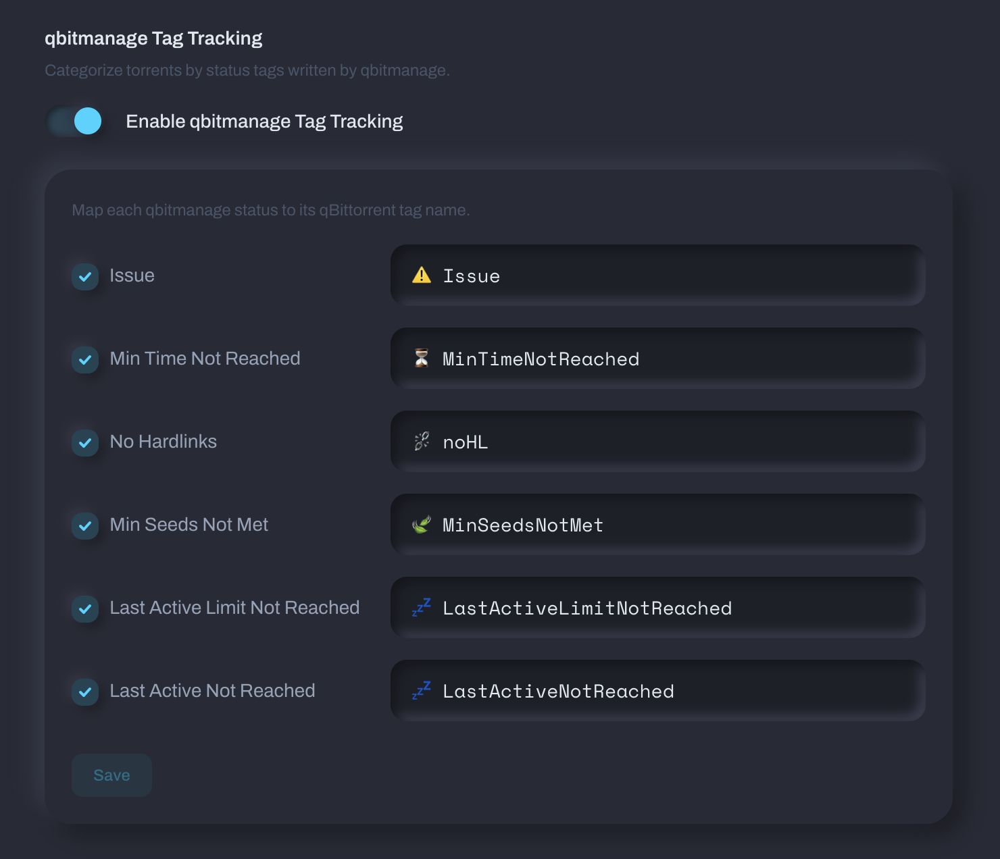
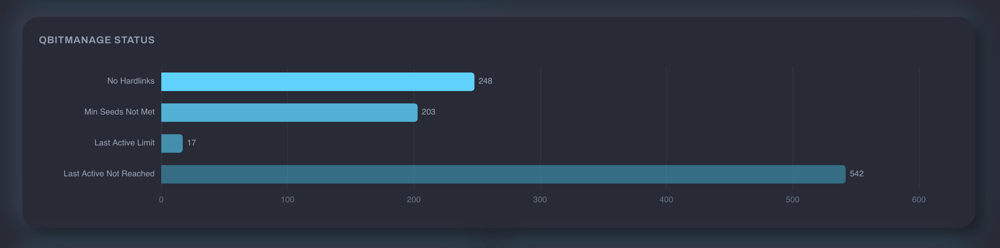

qbitmanage Integration¶
qbitmanage is a tool that automatically manages your qBittorrent torrents — tagging, categorizing, cleaning up orphaned data, enforcing share limits, and more. If you already run it, Tracker Tracker can read its tags and turn them into useful charts.
This page covers how the two tools work together. For general tag group setup, see Tag Groups.
How It Works¶
qbitmanage writes tags to your torrents in qBittorrent. Tracker Tracker reads those tags during its deep poll cycle. You set up tag groups that match qbitmanage's tag names, and the charts appear automatically on each tracker's Torrents tab.
Nothing is pushed between the two — they both talk to qBittorrent independently.
Built-In Status Tag Tracking¶
Tracker Tracker has built-in support for qbitmanage's status tags. Enable it in Settings → Download Clients → qbitmanage Tag Tracking.

Map each status to the tag name from your qbitmanage config. Here are qbitmanage's out-of-the-box defaults:
| Status | Default tag | Config key | What it means |
|---|---|---|---|
| Issue | issue |
tracker_error_tag |
Torrent has a tracker error (unregistered, dead, etc.) |
| Min Time Not Reached | MinTimeNotReached |
share_limits_min_seeding_time_tag |
Hasn't hit the minimum seeding time for its share limit group |
| No Hardlinks | noHL |
nohardlinks_tag |
No hardlinks found outside the root directory |
| Min Seeds Not Met | MinSeedsNotMet |
share_limits_min_num_seeds_tag |
Not enough other seeders to safely remove yet |
| Last Active Limit Not Reached | LastActiveLimitNotReached |
share_limits_last_active_tag |
Hasn't been inactive long enough for removal |
| Last Active Not Reached | LastActiveNotReached |
share_limits_last_active_tag |
Last activity hasn't crossed the threshold |
Many people customize these with emoji prefixes (e.g., ⚠️ Issue instead of issue). If you've changed them in your qbitmanage config.yml, enter your tag names — not the defaults above.
Here's what the qbitmanage status breakdown looks like on a tracker's Torrents tab:

Match your config exactly
Tag names must match character-for-character, including any emoji or special characters. Copy them directly from your qbitmanage config.yml.
Tag Group Examples¶
Here are some tag groups that work well alongside qbitmanage.
Priority Breakdown¶
If you use qbitmanage's tracker tagging to assign priority levels, create a group to see the distribution:
| qBT Tag | Display Label |
|---|---|
🔸🔸🔸 High Priority |
High Priority |
🔸🔸🔹 Medium Priority |
Medium Priority |
🔸🔹🔹 Low Priority |
Low Priority |
🔹🔹🔹 Unknown Priority |
Unknown Priority |
Set the display type to Donut and enable Count unmatched tags to see how many torrents don't have a priority assigned yet.
This works because qbitmanage's tracker: section assigns priority tags per tracker:
tracker:
redacted:
tag:
- 🕵️ Redacted
- 🔸🔸🔸 High Priority
- 💎 Seed Forever
torrentleech:
tag:
- 🕵️ TorrentLeech
- 🔸🔸🔹 Medium Priority
Seed Forever¶
A single-tag group for torrents you've committed to permanent seeding:
| qBT Tag | Display Label |
|---|---|
💎 Seed Forever |
Seed Forever |
In qbitmanage, 💎 Seed Forever typically maps to a share limit group with max_ratio: -1 and max_seeding_time: -1 (unlimited):
Automation Source¶
Track how many torrents came from automated tools:
| qBT Tag | Display Label |
|---|---|
Autobrr |
Snatched by Autobrr |
cross-seed |
Cross-Seed |
Set display type to Numbers for a simple count.
The cross_seed_tag in qbitmanage config controls the cross-seed tag:
Share Limit Health¶
See which share limit rules are actively holding torrents:
| qBT Tag | Display Label |
|---|---|
⏳ MinTimeNotReached |
Waiting on min seed time |
🍃 MinSeedsNotMet |
Needs more seeders |
💤 LastActiveNotReached |
Still active |
Use Bar display type so you can compare counts at a glance.
No Hardlinks Breakdown¶
If you care about storage efficiency, track how many torrents have no hardlinks across different content types by combining the ⛓️💥 noHL tag with category-based filtering in qbitmanage:
Create a tag group with just the ⛓️💥 noHL tag and enable Count unmatched tags to see the ratio of hardlinked vs. non-hardlinked torrents.
Tips¶
- qbitmanage runs on its own schedule. Tags may take a few minutes to appear in qBittorrent after a new torrent is added. Tracker Tracker polls qBittorrent every 5 minutes by default, so there's a lag between qbitmanage tagging a torrent and the chart updating.
- Emoji in tags are fine. qbitmanage commonly uses emoji prefixes for visual organization. Tracker Tracker handles them without issues — just make sure the exact emoji sequence matches.
- Priority tags come from the
tracker:section, not from share limits. Share limits use the priority tags for filtering, but the tags themselves are assigned by the tracker keyword matching. - You don't need qbitmanage to use tag groups. Any tags in qBittorrent work — qbitmanage just happens to be the most popular way to automate tagging in the homelab community.